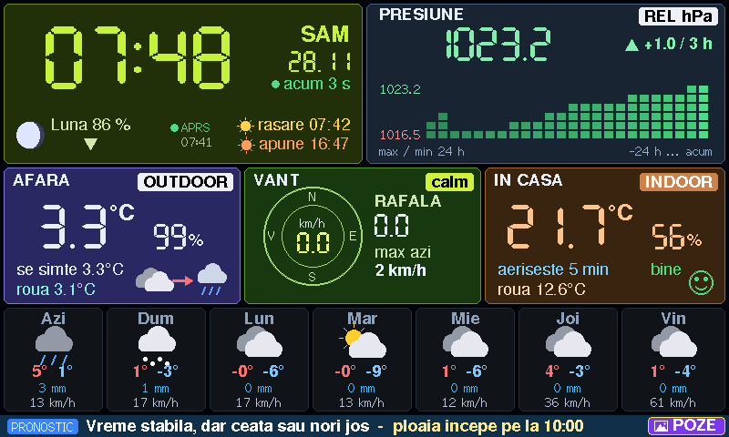
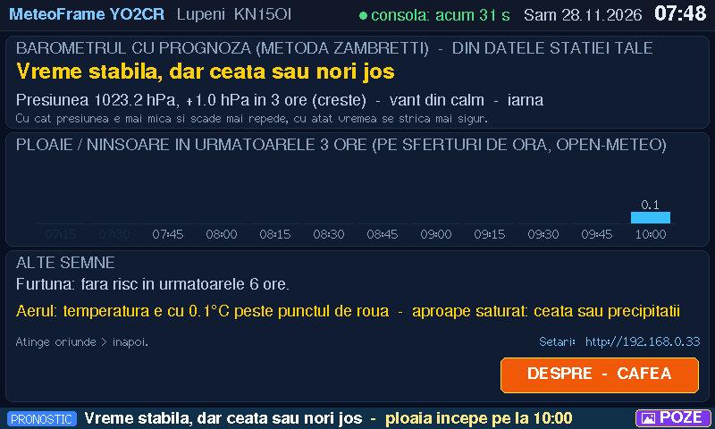
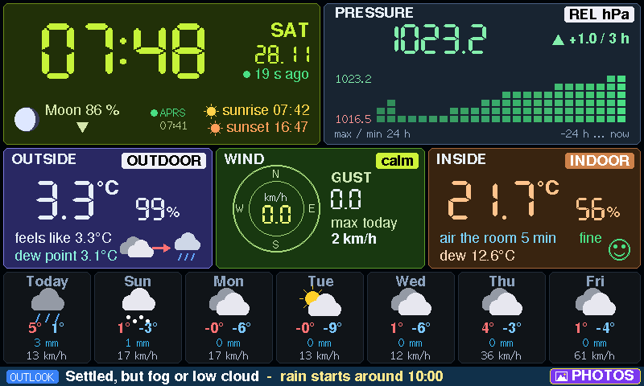
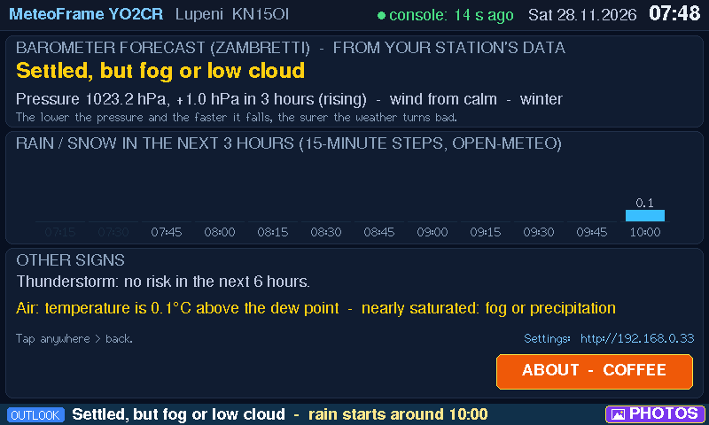
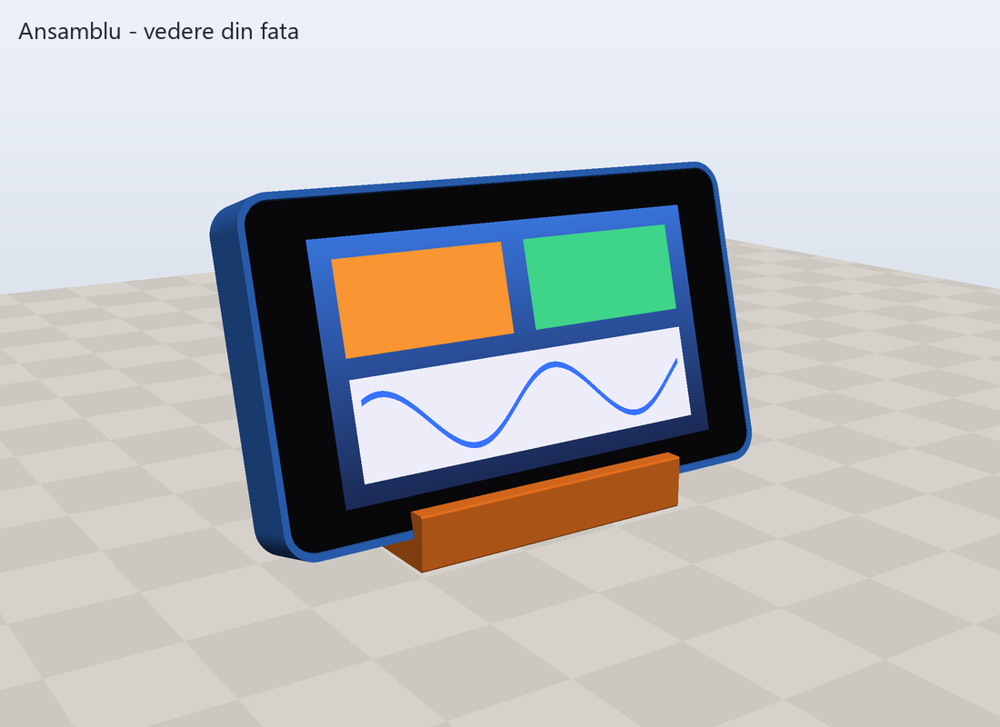

MeteoFrame gratuit · 1.0free · 1.0
Ecran meteo și ramă foto pentru stația ta meteo, pe placa Waveshare cu ecran tactil de 7".
A weather display and photo frame for your weather station, on the Waveshare 7" touch board.




- Datele stației tale prin WiFi: temperatură, umiditate, vânt, ploaie, presiune, UV, ușor de citit de la distanță.
- Prognoza pe 7 zile, grafice pe 3 zile, barometru cu prognoză (Zambretti), ploaia din următoarele 3 ore.
- Avertizările ANM și stațiile ANM din jur (România), recorduri, confortul din casă.
- Ramă foto cu pozele tale, alarme pe ecran și pe telefon (ntfy), termometre Bluetooth, APRS.
- Română și engleză, unități metrice sau imperiale. Fără licență, fără cont, fără cloud.
- Your station's data over WiFi: temperature, humidity, wind, rain, pressure, UV, easy to read from across the room.
- 7-day forecast, 3-day charts, a forecasting barometer (Zambretti), rain in the next 3 hours.
- Romanian ANM warnings and nearby stations, records, indoor comfort.
- Photo frame with your own photos, alarms on screen and phone (ntfy), Bluetooth thermometers, APRS.
- English and Romanian, metric or imperial units. No licence, no account, no cloud.
De ce ai nevoie
What you need
- placa Waveshare ESP32-S3-Touch-LCD-7 (800×480; nu varianta 7B)
- o stație cu Customized / Ecowitt în WS View Plus (Sainlogic WS3500, Ecowitt, Froggit, Misol...) sau Wunderground
- WiFi 2,4 GHz (sau hotspotul telefonului)
- Waveshare ESP32-S3-Touch-LCD-7 board (800×480; not the 7B)
- a station with Customized / Ecowitt in WS View Plus (Sainlogic WS3500, Ecowitt, Froggit, Misol...) or Wunderground
- 2.4 GHz WiFi (or your phone's hotspot)
Instalare din browserInstall from the browser
Cu un cablu USB-C de date la calculator (de obicei portul UART al plăcii). Folosește Chrome sau Edge.
With a USB-C data cable to the computer (usually the board's UART port). Use Chrome or Edge.
Alege portul plăcii din listă, apoi confirmă. Durează 1–2 minute.
Pick the board's port from the list, then confirm. It takes 1–2 minutes.
Telefonul pe WiFi MeteoFrame (parola meteo1234), deschide 192.168.4.1. Detaliile sunt în manual.
Phone on WiFi MeteoFrame (password meteo1234), open 192.168.4.1. Details in the manual.
Nu apare portul? Încearcă alt cablu sau celălalt port USB-C. Pe Windows mai vechi poate trebui driverul CH343. Dacă nu pornește scrierea: ține BOOT, apasă RESET, eliberează BOOT.
No port? Try another cable or the other USB-C port. Older Windows may need the CH343 driver. If writing won't start: hold BOOT, press RESET, release BOOT.
Fișiere
Files
Actualizare: dacă MeteoFrame merge deja, pagina de setări → Actualizare firmware → alegi fișierul. Setările și pozele rămân.
Update: if MeteoFrame is already running, settings page → Firmware update → choose the file. Settings and photos are kept.
Cutie pentru imprimanta 3D3D-printed case
Am făcut și o cutie pentru placă, cu suport de masă înclinat la 15°, care se printează la imprimanta 3D. Placa se prinde cu 4 șuruburi M3. În spate are loc pentru cablul USB-C și fante de aerisire.
I also made a case for the board, with a desk stand tilted at 15°, ready for a 3D printer. The board is held by 4 M3 screws. At the back there is room for the USB-C cable, and ventilation slots.
- 2 piese: cutia din spate și suportul
- PLA sau PETG, fără suporturi la printare
- 2 parts: the back case and the stand
- PLA or PETG, no print supports needed

Dacă îți place, o cafea ajută: If you like it, a coffee helps: ko-fi.com/yo2cr
Întrebări și idei: Questions and ideas: groups.io/g/yo2cr (#meteo)
Probat pe Sainlogic WS3500 (consola EasyWeather), la YO2CR. Prognoza: Open-Meteo.com (CC BY 4.0). Avertizări: ANM / MeteoAlarm.
Tested with a Sainlogic WS3500 (EasyWeather console) at YO2CR. Forecast: Open-Meteo.com (CC BY 4.0). Warnings: ANM / MeteoAlarm.